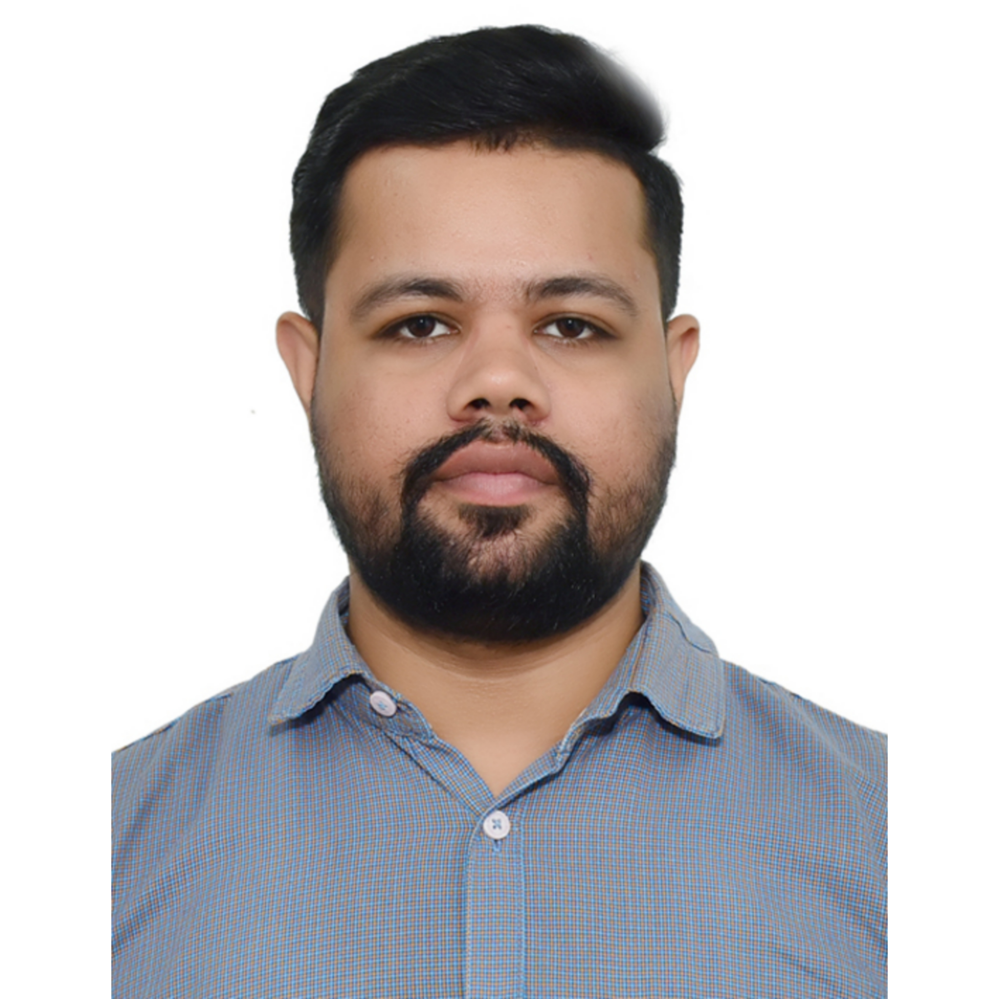

Himanshu Kukkar

Summary
To work in an organization where I can show my talent, my skills and even enhance them to provide the maximum efforts for organization to meet its goals and objectives with full enthusiasm.
Education
- Bachelors of Technology - Mechanical Engineering (2014-2018)
- Matric +2 - Science
- Matric
Work Experience
- Claims Executive - Shriram General Insurance
2021-Present
- Handling variety of Motor Accident Claims.
- Undertake onsite valuations, surveys and risk management assessments.
- Research, collate and assess risk information relating to Vehicles, property, employees or clients.
Skills
- Customer Service - ⭐️⭐️⭐️⭐️⭐️
- Claim Settlement - ⭐️⭐️⭐️⭐️⭐️
- Organizational Skills - ⭐️⭐️⭐️⭐️⭐️
Licensing and Certification
- IRDAI-Surveyor and Loss Assessor
- Backend Development - python and django
- CAD and Solidworks
Others